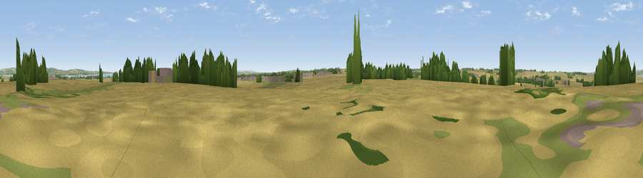

Viewpoint near West Halton
#33342 in England · top 69% of its area beats it · near West HaltonThe view, rendered

A 360° render of this exact spot computed from the terrain model, tree cover and land cover — summer colours, afternoon light, calibrated against photographs of famous viewpoints. Real trees, hedges and buildings will differ in detail.
The panorama
Grey silhouette: terrain skyline in each direction (720 bearings, Earth curvature and refraction included). Dashed green: skyline with trees (+15 m) and buildings (+8 m) as obstacles. Blue strip: how far the ground is visible on each bearing.
Where the view opens
Wedge length = distance to the farthest visible ground on that bearing (vegetation-aware). Rings at 10, 25 and 50 km.
What fills the view
70% cropland · 16% grassland · 7% woodland · 3% water · 3% built-up
Angular shares of the visible panorama (visual magnitude), not map area. Landscape diversity 0.42 (0–1 Shannon).
Key numbers
More beautiful places nearby
The staircase of upgrades: each row has a higher view potential than everything closer. Driving times are estimates from straight-line distance, calibrated against real road routing — check an actual route before setting out.
| Place | Direction | Drive | Score |
|---|---|---|---|
| Viewpoint near Alkborough | WNW · 4 km | ~10 min | 59.0 |
| Viewpoint near Alkborough | W · 5 km | ~11 min | 62.1 |
| Viewpoint near Burton Stather | W · 5 km | ~11 min | 62.4 |
| Viewpoint near South Newbald | N · 14 km | ~25 min | 64.9 |
| Viewpoint near Nunburnholme | N · 28 km | ~44 min | 68.5 |
| Viewpoint near Claxby | SE · 30 km | ~47 min | 70.5 |
| Viewpoint near Claxby | SE · 31 km | ~49 min | 71.5 |
| Garrowby Hill (A166 crest) | NNW · 38 km | ~57 min | 71.9 |
53.66976, -0.60792 · source: osm peak · position refined by local search. Computed location — check access rights before visiting.